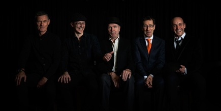

Tangokvintetten plays Piazzolla
Tango is soul, pain, and sensuality – the whole spectrum of emotions – and when composed by
Astor Piazzolla it is in a musical language that crosses borders, styles, and generations.
Tangokvintetten plays Piazzolla in a way that makes it clear why he is often referred to as
the most renowned composer of tango music in the world. Piazzolla lifted the tango from
Argentinian bars, brothels, and milongas into concert halls throughout the world, infusing
it with elements of classical and jazz music, yet remaining faithful to its soul. The band
was usually a quintet of violin, bandoneon, piano, electric guitar, and double bass; the
combination of instruments considered by critics to be ideal for Piazzolla’s compositions
and preferred by the composer himself.
Piazzolla lived and worked on three continents, which is clearly audible in his music. In
this recording, the versatile musicians of Tangokvintetten emphasize this diversity, bringing
flavours of classical and jazz, as well as folk and rock music into the wondrous scores of
Piazzolla. They lead the way on a musical journey through the entire kaleidoscope of human
emotions, from ecstatic joy to the blue notes of melancholy. The exacting compositions are
enriched by vibrant improvisations, and with the sublime chamber playing and refined timbre
that always accompany Tangokvintetten on stage.
A unique concert experience awaits audiences worldwide!